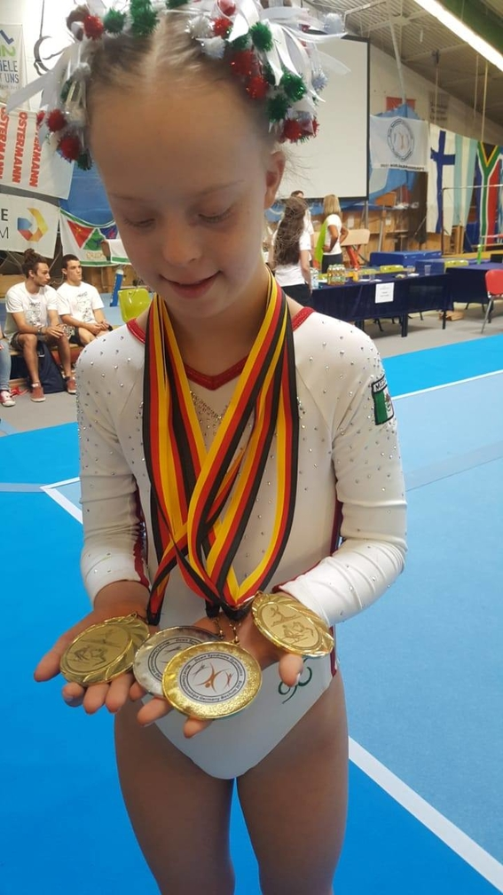

Historia de Bibi Wetzel
Bibi es una gimnasta Mexicana de 14 años de edad, hija de Mónica Claudia Aguilar de la Garza y Humberto Wetzel Castillejos
A partir de los a sus 11 años al conquistar el titulo de Campeona Mundial por su desempeño gimnástico en competencias de alto rendimiento para atletas con Síndrome de Down. Llamo la atención del mundo, siendo orgullo e inspiración para niños y adultos, por romper esquemas y paradigmas, al ser la otra cara de la realidad alcanzable.

Asiste a escuela regular, SECUNDARIA, recibiendo BECA por su desempeño atlético.
Actualmente se encuentra terminando su 2do año de Secundaria, sin adecuaciones curriculares.
Estudia:
› Matemáticas (método Kumon)
› Lectura Comprehensiva (método Kumon) con la finalidad
de poder entrar a la universidad.
Lee y escribe un segundo idioma (inglés) Con certificado de
conocimiento del Ingles, Cambridge (nivel “Starters”).
Complementa su desarrollo con clases de:
música, (batería),
otros deportes a nivel hobbie. (tenis),
oratoria y terapia del lenguaje.
Además de tener una activa vida social… En su escaso
tiempo libre.